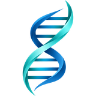
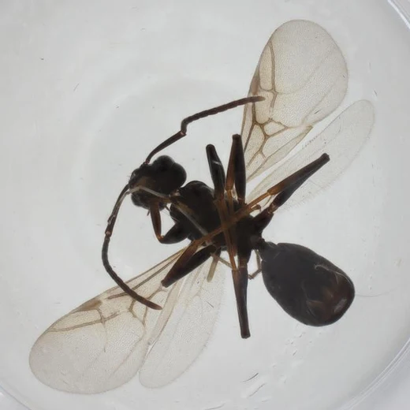

Why insects need better data
The question
Can one dataset, pairing insect images with DNA at the scale of millions, teach machine learning to identify the species we know and to recognize the ones we have never seen?
Background
Insects make up a large share of animal diversity, and many species have never been formally described. Experts cannot identify specimens at the scale needed to monitor biodiversity, so models must learn to do it from images and DNA.
A DNA barcode, a short stretch of one gene, is usually enough to tell species apart, and barcodes with similar sequences are grouped into clusters called BINs, a stand-in for species. Most collections offer images alone. BIOSCAN-1M was the first to pair images with DNA at scale, but it covered three countries and was tested on images only.
Five million specimens, many views each
BIOSCAN-5M brings together over 5 million arthropod specimens, 98% of them insects. Every specimen was photographed under a microscope and DNA barcoded, then labelled as far down the taxonomy as experts could go.
Microscope image
High-resolution RGB photo, original, cropped and resized

DNA barcode
COI gene sequence
Barcode Index Number
Similar barcodes, one cluster
Size

Taxonomy
From phylum down to species
Geography
Example record from BIOSCAN-5M: one specimen and its six kinds of data.
Most specimens are still unnamed
Share of BIOSCAN-5M in each species set. Each set serves a different task.
Splits for closed and open worlds
Data is partitioned by how well each specimen's species is known, so the same dataset supports classification, novelty detection and self-supervised learning.
Established species names. Closed-world tasks.
trainvaltestKnown genus, placeholder species. Open-world tasks.
key_unseenval_unseentest_unseenPlaceholder genus and species. Novelty detection.
other_heldoutNo species label. Self- and semi-supervised learning.
pretrainThree ways to put it to work
Three benchmarks show what the dataset makes possible, each tested down to species level and on species the models never saw in training.
species accuracy on known species, from the DNA barcode alone
of new species placed in the right genus, against the next-best transformer model
species agreement when DNA groups specimens with no labels
Image clusters match the taxonomy at order level, but lose it at species level
species accuracy for image search after aligning images with DNA and text
Training on 5 million rather than 1 million records improves results at every taxonomic rank
- DNA identifies species. Pretrained on the BIOSCAN-5M barcodes, BarcodeBERT reaches 99.3% species accuracy, and places new species in the right genus twice as often as other transformer models.
- DNA groups the unknown. With no labels and no training on BIOSCAN-5M, DNA embeddings sort specimens by species with 91% agreement, where image embeddings reach only 21%.
- Images learn from DNA. Aligning images with DNA and taxonomic text triples species accuracy for image search, and more data helps at every rank.
What I led
- Led the dataset, coordinating multi-partner teams through curation, preprocessing and ML experimentation.
- Built preprocessing pipelines for cropping, resizing and bounding-box extraction at scale.
- Made the data ML-ready with split-aware structure and consistent CSV and JSON-LD metadata.
- Released it openly with a Hugging Face loader and copies on Zenodo, Kaggle and Google Drive.
- Led benchmarking of multimodal classification and clustering baselines.
- Analysed the data: size features, geographic and genetic statistics, and diversity via Barcode-Metric.